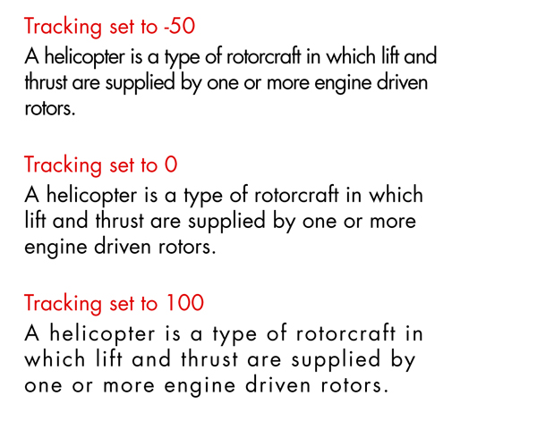

Tracking (or letter-spacing) is the space between groups of characters. This is called the letter-spacing property in CSS.
Tracking can be described as being loose or tight. Loose tracking is when the letters have a larger distance between them. Tight tracking is when the letters are closer.
Tracking has similar guidelines as leading, and all of these best practices are tied to readability.
The longer your line (or measure as it’s often called) the more loose your tracking needs to be. This rule is not set in stone. Variables such as typeface choice, background color, number of columns and the surrounding design elements can also influence the readability of a block of text. Each time you set type, you should be looking at the overall picture.